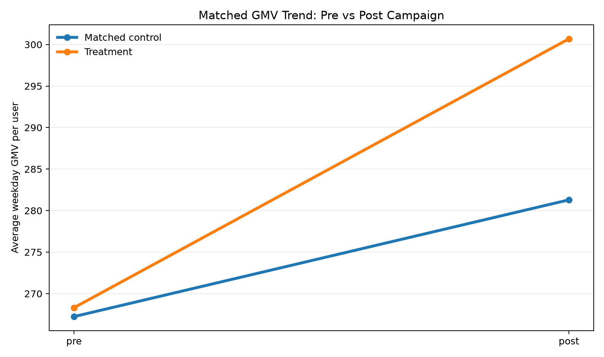
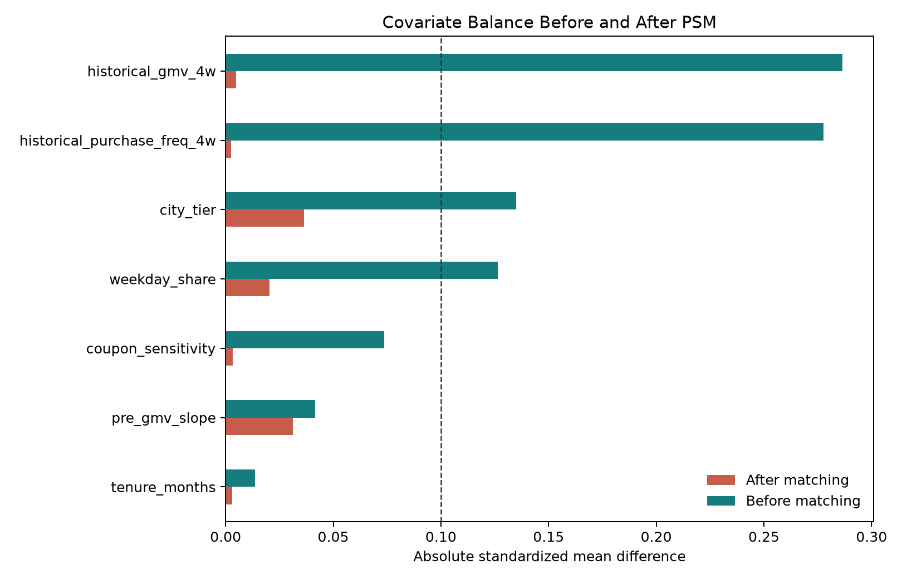

Post-campaign treatment users appeared 24.3% higher in the raw sample, but that number mixes targeting bias, baseline spending differences, and campaign impact.
Synthetic Causal Inference Case
Coupon Incrementality with PSM + Difference-in-Differences
A privacy-safe recreation of a marketplace coupon campaign: use propensity score matching to build a comparable control group, then apply DID to isolate true incremental GMV from natural weekly demand movement.
6.8%
net incremental GMV lift after PSM + DID
24.3%
raw post-campaign lift, before causal adjustment
7,899
matched treatment-control pairs
5.3%
natural control-group weekday GMV trend
Project Background
Coupon campaigns can make revenue look higher even when they mainly subsidize users who were already likely to purchase. The core question is not whether treated users spent more, but whether the coupon created incremental GMV beyond the baseline trend.
- Business goal Increase weekday purchase frequency among high-value marketplace users during off-peak periods.
- Measurement risk High-value users naturally spend more, so a simple treated-vs-control comparison can overstate impact.
- Data strategy Generate a synthetic user-level panel that mirrors historical GMV, purchase frequency, pre-period trend, coupon sensitivity, and city tier.
- Evaluation Use PSM to reduce selection bias, then DID to subtract the matched control group's natural demand movement.
Why Causal Inference
The campaign was not a clean randomized A/B test in this synthetic scenario. Coupons were more likely to target high-value users, which creates selection bias. PSM helps compare similar users, but PSM alone still cannot remove time-varying shocks such as weekly seasonality or platform-wide promotion effects.
Users were matched on historical GMV, purchase frequency, pre-period GMV slope, weekday share, coupon sensitivity, tenure, and city tier.
The matched control group grew 5.3% naturally, so the final readout focuses on treatment lift over that natural trend.
Method Flow
Step 01
Synthetic panel creation
Build a privacy-safe marketplace dataset with pre/post weekday GMV and user-level targeting covariates.
- 12,000 users and 24,000 user-period rows
- Observed treatment assignment is intentionally biased toward high-value users
- True coupon effect is calibrated to reproduce a 6.8% net lift case
Step 02
Propensity score matching
Estimate each user's probability of receiving a coupon, then match treated users to nearest control users.
- Logistic propensity model
- Nearest-neighbor matching with a propensity caliper
- Balance checked with standardized mean differences
Step 03
Difference-in-Differences
Compare pre-to-post GMV movement in the treatment group against the matched control trend.
- Treatment trend: +12.1%
- Matched control trend: +5.3%
- Net incremental lift: +6.8%
Results
The final result aligns with the business narrative: coupon users increased GMV, but the causal estimate is smaller and more credible after subtracting the control group's natural growth trend.
| Readout | Estimate | Interpretation |
|---|---|---|
| Naive post-campaign comparison | 24.3% | Overstates impact because coupon targeting selected users with stronger baseline value. |
| Treatment group pre-to-post change | 12.1% | Total movement among coupon-targeted users after the campaign. |
| Matched control natural trend | 5.3% | What similar users gained without coupon treatment. |
| PSM + DID net GMV lift | 6.8% | Estimated incremental effect attributable to the coupon intervention. |
Visual Diagnostics


Project Takeaway
The key lesson is measurement discipline: PSM makes the treatment and control groups more comparable, while DID prevents natural week-over-week demand movement from being mislabeled as coupon impact. The resulting 6.8% lift is a cleaner incrementality estimate than a simple post-campaign GMV comparison.
Public Data Note
This repository uses synthetic data. It is calibrated to mirror the business mechanics and headline result from a real growth analytics case, but it does not contain proprietary user, coupon, or transaction data.